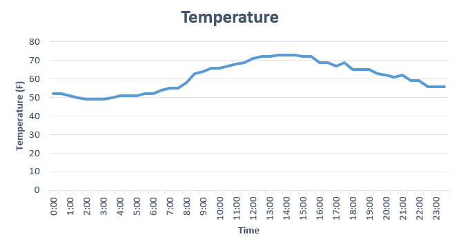

<!--
   Copyright 2017 LGS Innovations

   Licensed under the Apache License, Version 2.0 (the "License");
   you may not use this file except in compliance with the License.
   You may obtain a copy of the License at

       http://www.apache.org/licenses/LICENSE-2.0

   Unless required by applicable law or agreed to in writing, software
   distributed under the License is distributed on an "AS IS" BASIS,
   WITHOUT WARRANTIES OR CONDITIONS OF ANY KIND, either express or implied.
   See the License for the specific language governing permissions and
   limitations under the License.
 -->
<link rel="import" href="../../bower_components/polymer/polymer.html">
<link rel="import" href="../settings-document/settings-document.html">
<!--<link rel="import" href="polymer-grid-layout.html">-->
<link rel="import" href="../../bower_components/iron-resizable-behavior/iron-resizable-behavior.html">
<link rel="import" href="../../bower_components/paper-listbox/paper-listbox.html">
<link rel="import" href="../../bower_components/paper-input/paper-input.html">
<link rel="import" href="../base-layout/base-header-layout/base-header-layout.html">
<link rel="import" href="../base-layout/base-single-grid-item-wrapper/base-single-grid-item-wrapper.html">
<link rel="import" href="../base-layout/base-drawer-layout/base-drawer-layout.html">
<link rel="import" href="../base-shared-styles/base-shared-styles.html">
<link rel="import" href="./weather-dashboard-tdata.html">
<link rel="import" href="./ochart.html">


<dom-module id="weather-dashboard-app-temperature">
  <template>
    <!--<style include="base-shared-styles">
      :host {
        display: block;
        position: relative;
        height: 100%;
      }
    </style>-->
    <style is="custom-style">
      .container {
          @apply(--layout-grid-justify-items-center);

          grid-template-columns: 200px 200px 200px;
      }
      .container > div {
          border: 1px solid rgba(0,95,107);
          border-radius: 3px;
          background-color: rgba(0, 95, 107, 0.8);
          padding: 0.2em;
          color: #fff;
          margin-bottom: 10px;
      }
      .container > div:nth-child(odd) {
          background-color: rgba(110, 195, 107, 0.8);
      }
    </style>

    <weather-dashboard-tdata items="{{items}}"></weather-dashboard-tdata>
    <settings-document tag="current#TemperatureSettings" key="reading" data="{{reading}}"></settings-document>
    
    <base-header-layout x-title="Temperature" no-back>
      <div class="row">
        <div class="column">
          <div class="row">
            <base-single-grid-item-wrapper>
              <div class="heading">Current Temperature</div>
              <div class="reading">
                {{reading}}
              </div>
            </base-single-grid-item-wrapper>
          </div>
          <div class="row">
            <base-single-grid-item-wrapper>
              <div class="heading">Graph</div>
              <div id="chartdiv"></div>
              </img>
            </base-single-grid-item-wrapper>
          </div>
        </div>
        <div class="column">
          <base-single-grid-item-wrapper>
            <div class="row">
              <div class="heading">History</div>
                <div class="content">
                  <template>
                    <div id="chartdiv"></div>
                  </template>
                  <paper-listbox>
                    <template is="dom-repeat" items="[[items]]">
                      <paper-item>Temp reading date: [[item.date]]</paper-item>
                      <paper-item>Temp reading time: [[item.time]]</paper-item>
                      <paper-item>Temp reading data: [[item.celsius]]</paper-item>
                    </template>
                  </paper-listbox>
                </div>
            </div>
          </base-single-grid-item-wrapper>
        </div>
      </div>
     </base-header-layout>
  </template>
  <script>
  (() => {
    'use strict';
    
    // var PolymerUtils = {
    //   template: {
    //     restamp: function(template) {
    //       // template.if = false;
    //       // setTimeout(function() {
    //       //   template.if = true;
    //       // });
    //       template._teardownInstance();
    //       template._ensureInstance();
    //     },
    //   }
    // };
    
    
    Polymer({
      is: 'weather-dashboard-app-temperature',
      properties: {
        items: {
          type: Array
        },
        celsius: {
          type: String
        }
      },
      isCurrent: function(item){
          var index = this.items.indexOf(item);
          var ret = this.get([items,index]);
          return ret;
      }
      
      // attached: function() {
      //   var app = this;
      //   setInterval(function() {
      //     PolymerUtils.template.restamp(app.$.rend);
      //   }, 5000);
      // 
      // }
    });
  })();
  </script>
</dom-module>
